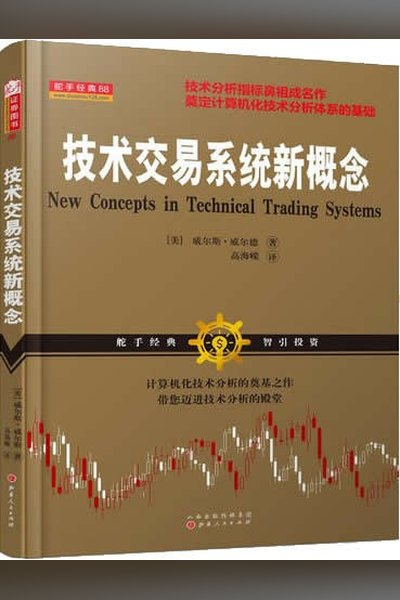
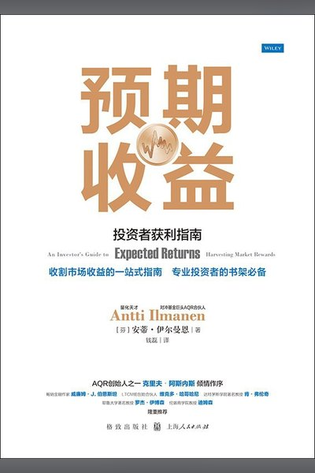

仓位 ∝ 目标波动率 / 已实现波动率，下跌波动放大时自动减仓。海龟法则的“按波动率等风险配置”与风险平价的简化版。
同一套规则在四个市场上的表现；点击市场名切换上方曲线。
| 市场 | 年化 | 基准年化 | 超额 | 最大回撤 | 基准回撤 | 夏普 | 交易 | 胜率 | 暴露 | 样本外超额 |
|---|---|---|---|---|---|---|---|---|---|---|
| 沪深300 | 8.6% | 7.0% | +1.6% | -30.5% | -72.3% | 0.59 | 115 | 25% | 42% | +0.5% |
| 上证指数 | 7.2% | 5.3% | +1.9% | -32.7% | -72.0% | 0.49 | 103 | 24% | 44% | -1.0% |
| 标普500 | 5.5% | 8.9% | -3.4% | -23.5% | -56.8% | 0.39 | 117 | 32% | 70% | -5.0% |
| 纳斯达克100 | 7.8% | 12.1% | -4.3% | -17.2% | -55.6% | 0.54 | 116 | 30% | 65% | -7.0% |
按“T+1 开盘成交 + 单边 5bp 成本”计算，未平仓交易单独标注。
| # | 入场 | 出场 | 入场价 | 出场价 | 持有天数 | 收益 |
|---|---|---|---|---|---|---|
| 加载中… | ||||||

技术交易系统新概念J. Welles Wilder Jr. · 对应观点 5 条
预期收益与因子投资Antti Ilmanen（含 Asness 动量研究） · 对应观点 5 条 海龟交易法则Curtis Faith · 对应观点 5 条